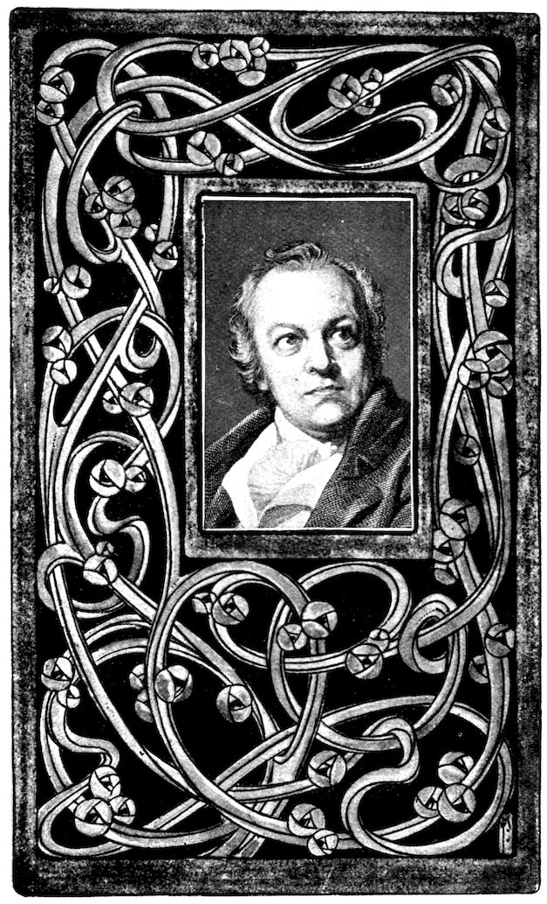
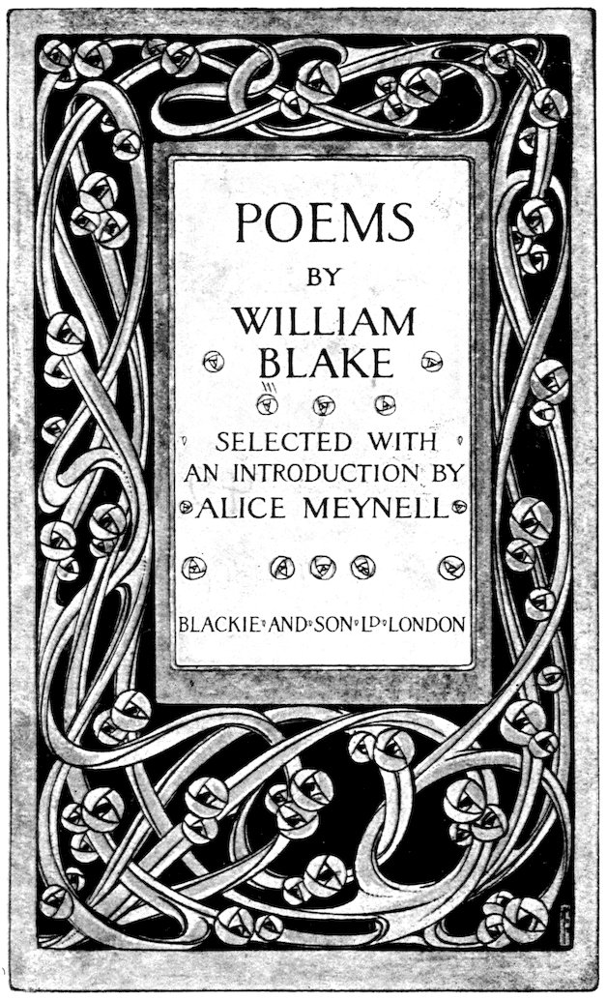

Title: Poems
Author: William Blake
Editor: Alice Meynell
Release date: August 13, 2026 [eBook #79363]
Language: English
Original publication: London: Blackie, 1911
Other information and formats: www.gutenberg.org/ebooks/79363
Credits: Richard Tonsing and the Online Distributed Proofreading Team at https://www.pgdp.net (This file was produced from images generously made available by The Internet Archive)
Transcriber’s Note:
New original cover art included with this eBook is granted to the public domain.
Red Letter Library


iii“I amused myself this spring”, writes Henry Crabb Robinson in 1810, “by writing an account of the insane poet, painter, and engraver, Blake.” To-day a man of letters who should roundly call Blake a madman would be thought to have cast away his literary reputation. Not for this, however, should such a one be condemned, but for having thus “amused himself”. Blake’s intellect did, terribly and portentously, overpass the limits of normal sanity; but we must watch its distractions gravely, with a serious thought askance upon our arbitrary or merely habitual definitions of normal sanity—our delimitations which serve well enough for every day, but which we might distrust in the case of Blake’s day, a day more than naturally luminous with a more than natural sun. It is a grave question for Blake, but a graver one for humanity, this question whether Blake was sane. Nor is it possible to solve it, for we have at the outset a difficulty of which his readers never can and never will be quit: I mean the difficulty of his terms. His vocabulary has never ivbeen interpreted for us—there is no interpreter. Or, to speak more precisely, there are many “interpreters”, but there is no translator. There is no one to authorize its equivalent in the speech of other Englishmen. When Blake tells us of his great friendship with an Angel who had become a Devil, or promises us an infernal Bible if we will deserve it, and again tells us he has “the Bible of Hell which the world shall have whether they will or no”, he uses substantives for which no man has a key. When, on the other hand, he says that the Prophets Isaiah and Ezekiel dined with him, we have the terms definite enough, but are little the wiser.
Blake’s genius, in fact, is entangled with his insanity. A sign and proof of the purity and singleness of that genius is precisely that it is entangled with his high insanity, and with nothing else: with none of the adulterations wherewith other men of name have mingled their fancy. No slight or suspicion is cast upon the poetry of Blake by those who have to confess that he was, in unknown measure, at undated times, in transcendent moods, a madman; but who have not to confess that he was a man of the world, a secondary man, a waiter upon literary fashions, a weakling trusting to the strength of numbers vof a literary company, a wearer of other men’s passions, or so much as capable of an insincerity. All these have been characters of poets who did not believe that they saw Ezekiel sitting in a field, and of painters who never thought St. Joseph had taught them how to dilute glue for water-colour drawing.
All “interpreters” of Blake—and they have been many, and most eager, most able—are constrained to make their own use of his terms, and therefore in some measure to think for Blake instead of fulfilling the harder duty of suffering Blake to think for them.
As a philosopher, therefore—and Blake seems to be much more important as a philosopher than as the “poet, painter, and engraver” of Crabb Robinson’s phrase—he seized the scheme of “things entire”, not, like the intellectual sensualist, to make the days of mortality more pleasant, but to invert, to shatter, to re-conceive. (“Seems to be”, I have written, because it is not for any mind, seeking to reflect his, to do more than conjecture.) Blake recast the whole of morality, he laid his hand upon the very inner and innermost sacred centre of right and wrong—with what more than Satanic purpose, or to what more than archangelic viend? We know not, who know not what he meant when he wrote “evil”, nor what he meant when he wrote “good.” We need not be among those who have pressed their conjectures so urgently upon the reader. Are they sincere—and, if so, is their sincerity valuable—who proclaim themselves convinced students, thorough approvers, deliberate defenders, of Blake’s theism and Blake’s ethics? Can there be convinced study, or thorough discipleship, or deliberate defence? The only man who took Blake’s theology with a seriousness worthy of Blake, and the only man who took Blake’s terms with a sureness worthy of Blake and of the English language, was the honest, loving, and admiring man, Tatham—who burnt a great mass of manuscripts of Blake’s revelations. His act seems—is—horrible; but we can imagine Blake striking a hand into his hand rather than into that of any later man who has praised him. One thing may be added in connexion with the poetry and the philosophy of Blake. His greatest admirers are apt to guard themselves, to parry the most difficult questions of the simple, by averring that his speculative thought was “nebulous”. Now, however little or however much we may attain to comprehend of that speculative thought, one fact insists upon itself, asserts itself, through all viiour doubts, and this fact is the absolute definition, distinctness, and certainty of Blake’s sight, insight, thought, and speculation. No hesitation ever shakes that loud, emphatic voice, claiming, proclaiming, announcing.
The magic of Blake’s lyrical poems is greater than that of his prophetical books. It is perceptible to every reader and definable by no critic. What we cannot define, however, we may in part describe. And one important description of his lovely song presents it as walking (as, according to Victor Hugo, the beloved woman walks, to a man’s vision) in light. The sun that he saw when he looked not with, but through, the eye lights the landscape, the rivers, the forests of his dreams, the babes and angels of his vision. Not only through the eye did he see, but through the sun also. Not without pain do we learn that he hated and contemned the Nature he thus transcended.
Light, then, is Blake’s divine character, and next to light, simplicity. With him this latter all-precious quality is a positive thing, and no mere negation. When other poets have attempted it—poets neither mean nor foolish, but too ambitious in aspiring to this humble thing—we protest that simplicity cannot stand alone, and that to attain to mere simplicity, without an implicit, or excluded, viiinumerous company of qualities, is to share the distinction of the village idiot. But of Blake’s simplicity the one indescribable companion is genius; we need give it no multitudinous names. “The Tiger” is a Sunday-school poem for children, and it is in the crown of English literature. Nor is there any kind of paradox in this union of lowly use and high renown.
With regard to the choice of poems for the present collection, it may be added that care has been given to make it generally representative, so that the reader need not expect to find every lyric intelligible. The dramatic poem, and a few with it, are the work of Blake’s boyhood and early youth—“the production”, he says, “of untutored youth”; but we might rather call it “tutored youth”. It was his manhood that was untutored and went alone. These early poems prove the usual reading of a boy. That Blake was well read in Swedenborg (whom he first followed and then renounced), Boehm, Paracelsus, and a few more mystics, is the only sign of “literature” to be found in what is more properly the work of his life.
William Blake was born in London in 1757, the year for which Swedenborg had foretold the beginning of the new age of thought and vision. To this coincidence an ixinfluence of suggestion has been assigned; but Blake’s first vision was given to him when he was four years old, and obviously unaware of Swedenborg: “God put his forehead to the window”. Somewhat later he came, in Peckham Rye, upon a tree full of angels. And when he told his mother that he had seen Ezekiel sitting in a field, he was chastised for untruthfulness. He was not sent to school, chiefly because he would not brook rough handling; and in the leisure of home life his reading in the mystics began betimes. His father, a shopkeeper in Broad Street, Golden Square, was so well and liberally inspired as to send William to art studies. He worked for a few years at a drawing-school, and then for two years with a good engraver, Basire. Next came a course of drawing from the monuments and architectural detail of Westminster Abbey. Here he learnt to love Gothic, and here he had a vision of the Apostles. While still young he had the friendship of Fuseli and Flaxman, and underwent the grief of a first love despised. She who rejected him, and she who consoled him with her pity and whom, when he was twenty-five years of age, he married, are the only women who had any part in his life. Catherine Boucher, his wife, is believed to have been, at her xmarriage, entirely illiterate. But she learnt to copy his writings, to help him in engraving, to see visions with him, and to be in all ways his efficient and invaluable companion. They had no children. Blake’s visions had been withdrawn for twenty years when they were granted again, and his career as “prophet” and mystical poet began. His brother Robert, whom he had nursed in a last illness, and whose spirit he saw at the moment of death “clapping his hands for joy”, visited him from Heaven, and taught him how to engrave his poems and to print the wonderfully beautiful decorations of the page. “The Songs of Innocence” appeared in 1789, followed by “The Book of Thel”, “The Marriage of Heaven and Hell”, “The Vision of the Daughters of Albion”, “America”, “Europe”, “Gates of Paradise”, “The Book of Urizen”, “The Songs of Experience”, “The Song of Los”, “Abania”, “Jerusalem”, “Milton”, and “Vala”. This brings us well into the nineteenth century. By the kindness of his friend Hayley, Blake and his wife had taken possession, in 1800, of a cottage at Felpham, in Sussex, to which he was welcomed by angelic visions, but in which he spent “the darkest years that ever mortal suffered”. The incident of a scuffle with a soldier which befell there would not xibe worth mentioning but that Blake took it as a symbol: the soldier was Adam, for Blake turned him out of his Felpham garden. But for this country interlude Blake lived his life in London, and walked in suburban fields. His last poem was “The Ghost of Abel”, a fragment. Thenceforward he devoted himself to design. A publisher named Cromek commissioned him to illustrate Blair’s “Grave”; and out of a subsequent enterprise, “The Canterbury Pilgrims”, rose one of Blake’s numerous quarrels. He was a most quarrelsome man. A saint (and Blake’s experiences of ecstasy and contest resemble those of innumerable saints) would suspect all Blake’s spiritual history to be evil, delusive, and infernal because of the unchastened violence of his passion of anger. For the saint does not enter upon the mystical life except by the hard and humble way of long and unrelaxing self-conquest.
Of his wonderful pictorial works we need not here make a list, nor do his immoderate revilings of the painters whose works or persons displeased him concern the present purpose.
Blake died at the age of seventy. “On the day of his death”, writes one who reported Catherine Blake’s narrative, “he xiicomposed songs to his Maker, so sweetly to the ear of Catherine that, when she stood to hear him, he, looking upon her most affectionately, said, ‘My beloved, they are not mine. No! they are not mine!’ He expressed himself happy, hoping for salvation through Jesus Christ.... He burst out into singing of the things he saw in Heaven.” “He made the rafters ring,” says the Irvingite minister Tatham, he who burnt a hundred volumes of his works. It should be added that Blake had thought of burning these manuscripts with his own hand.
We must not close with the light of fire and burning. It was another light that Blake kindled in England. The light of our great poetry, that was clear and white in the sixteenth century, golden and ripe in the seventeenth, extinct in the chief part of the eighteenth, rose again upon the cloud and peak of Blake, before it made the valley, also, illustrious with Wordsworth.
| Section I | |
| Page | |
|---|---|
| To Spring | 3 |
| To Summer | 5 |
| To Autumn | 7 |
| To Winter | 9 |
| To the Evening Star | 11 |
| To Morning | 12 |
| Song | 13 |
| Song | 14 |
| Song | 15 |
| Mad Song | 16 |
| Song | 18 |
| To the Muses | 20 |
| Blind-Man’s Buff | 21 |
| King Edward the Third | 24 |
| Section II | |
| Songs of Innocence | |
| Introduction | 69 |
| The Shepherd | 70 |
| The Echoing Green | 71 |
| xivThe Lamb | 73 |
| The Little Black Boy | 74 |
| The Happy Blossom | 76 |
| The Chimney Sweeper | 77 |
| The Little Boy Lost | 79 |
| The Little Boy Found | 80 |
| Laughing Song | 81 |
| A Cradle Song | 82 |
| The Divine Image | 84 |
| Holy Thursday | 85 |
| Night | 86 |
| Spring | 88 |
| Nurse’s Song | 90 |
| Infant Joy | 91 |
| A Dream | 92 |
| Another’s Sorrow | 93 |
| Section III | |
| Songs of Experience | |
| Introduction | 97 |
| The Clod and the Pebble | 98 |
| Holy Thursday | 99 |
| The Little Girl Lost | 100 |
| The Little Girl Found | 103 |
| Nurse’s Song | 106 |
| The Sick Rose | 107 |
| The Fly | 108 |
| xvThe Angel | 109 |
| The Tiger | 110 |
| My Rose Tree | 112 |
| The Sunflower | 113 |
| The Lily | 114 |
| London | 115 |
| The Human Abstract | 116 |
| Infant Sorrow | 118 |
| Wrath | 119 |
| A Divine Image | 120 |
| A Cradle Song | 121 |
| The Schoolboy | 122 |
| To Tirzah | 124 |
| The Voice of the Ancient Bard | 125 |
| Section IV | |
| Daybreak | 129 |
| The Wild Flower’s Song | 130 |
| The Birds | 131 |
| The Land of Dreams | 133 |
| To Mr. Butts | 135 |
| To Mrs. Butts | 138 |
| To My Dear Friend, Mrs. Anna Flaxman | 139 |
| The Keys of the Gates of Paradise | 141 |
| Night and Day | 143 |
| Auguries of Innocence | 144 |
| xviThe Two Songs | 149 |
| The Throne of Mammon | 150 |
| The World | 152 |
| Smile and Frown | 153 |
| My Spectre | 154 |
| The Defiled Sanctuary | 157 |
| Barren Blossom | 158 |
| Opportunity | 159 |
| Love’s Secret | 160 |
| Fragment for “Jerusalem” | 161 |
| Cupid | 163 |
| The Golden Net | 164 |
| The Cabinet | 166 |
| William Bond | 168 |
| Los | 171 |
| Dedication of the Designs to Blair’s “Grave” | 175 |
| For a Picture of the Last Judgment | 177 |
| Scoffers | 178 |
| Fragments and Epigrams | 179 |
| Section V.—Extracts from the Prophetical Books | |
| From “Jerusalem” | 183 |
| Tiriel | 189 |
| The Book of Thel | 216 |
Yes, I have; I have a great ambition to know everything, sir.
But, when our first ideas are wrong, what follows must all be wrong, of course; ’tis best to know a little, and to know that little aright.
Then, sir, I should be glad to know if it was not ambition that brought over our king to France to fight for his right.
Though the knowledge of that will not profit thee much, yet I will tell you that it was ambition.
Then, if ambition is a sin, we are all guilty in coming with him, and in fighting for him.
Now, William, thou dost thrust the question home; but I must tell you that, guilt being an act of the mind, none are guilty but those whose minds are prompted by that same ambition.
Now, I always thought that a man might be guilty of doing wrong without knowing it was wrong.
Thou art a natural philosopher, and knowest truth by instinct; while reason runs aground, as we have run our argument. Only remember, William, all have it in their power to know the motives of their own actions, and ’tis a sin to act without some reason.
And whoever acts without reason may do a great deal of harm without knowing it.
Thou art an endless moralist.
Now there’s a story come into my head, that I will tell your honour, if you’ll give me leave.
No, William, save it till another time; this is no time for story-telling. But here comes one who is as entertaining as a good story.
Yonder’s a musician going to play before the King; it’s a new song about the French and English. And the Prince has made the minstrel a squire, and given him I don’t know what, and I can’t tell whether he don’t mention us all one by one; and he is to write another about all us that are to die, that we may be remembered in Old England, 56for all our blood and bones are in France; and a great deal more that we shall all hear by and by. And I came to tell your honour, because you love to hear war-songs.
And who is this minstrel, Peter, dost know?
Oh, ay, I forgot to tell that; he has got the same name as Sir John Chandos that the Prince is always with—the wise man that knows us all as well as your honour, only ain’t so good-natured.
I thank you, Peter, for your information, but not for your compliment, which is not true. There’s as much difference between him and me as between glittering sand and fruitful mould; or shining glass and a wrought diamond, set in rich gold, and fitted to the finger of an Emperor; such is that worthy Chandos.
I know your honour does not think anything of yourself, but everybody else does.
Go, Peter, get you gone; flattery is delicious, even from the lips of a babbler.
I never flatter your honour.
I don’t know that.
Why, you know, sir, when we were in England, at the tournament at Windsor, and the Earl of Warwick was tumbled over, you asked me if he did not look well when he fell; and I said no, he looked very foolish; and you was very angry with me for not flattering you.
You mean that I was angry with you for not flattering the Earl of Warwick.
Several of the Warriors met at the King’s Tent with a Minstrel who sings the following Song:
Bard
Anna Flaxman
Judgment